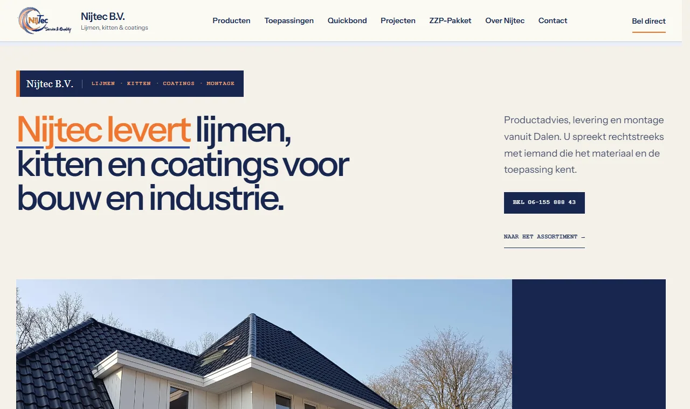
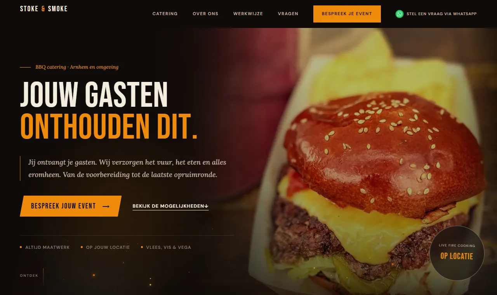

Nieuwe website
Vanaf een leeg canvas
Positionering, structuur, visueel ontwerp en development als één samenhangend traject.
Bekijk de startprijsWe combineren positionering, art direction en development tot een website die past bij de kwaliteit van je bedrijf en bezoekers gericht laat doorpakken.
Nieuwe website vanaf €850 · geen abonnement nodig · redesign op offerte
We kiezen de route op basis van wat er al is en hoe duidelijk de opdracht is.
Positionering, structuur, visueel ontwerp en development als één samenhangend traject.
Bekijk de startprijsVoor organisaties waarvan de huidige site niet meer past bij het merk, aanbod of de doelgroep.
Bespreek een redesignEen concrete analyse met prioriteiten en advies: verbeteren, redesignen of opnieuw bouwen.
Bekijk de Website ReviewEen technische leverancier vraagt om iets anders dan een uitgesproken cateringmerk. Het ontwerp volgt het bedrijf.

Rustige productroutes en een zakelijke vertaling van technische expertise.

Een warme, food-first website die sfeer snel omzet in een aanvraag.
Je kijkt mee in een werkende versie en geeft feedback op wat je daadwerkelijk ziet.
We bepalen wat de website moet vertellen, voor wie en welke actie centraal staat.
Geen template met een ander logo, maar art direction die bij het bedrijf past.
We bouwen, testen en lanceren met aandacht voor mobiel, snelheid en conversie.
Een nieuwe website is een eenmalige opdracht. Beheer is optioneel; redesign en uitgebreid maatwerk offreren we op basis van de echte omvang.
Een maandpakket is geen voorwaarde om een website bij Briqk te laten maken.
Vooraf leggen we vast wat binnen het maandpakket valt. Grotere uitbreidingen en redesigns offreren we apart, zodat er geen onduidelijkheid ontstaat.
Dan starten we direct met de opdracht. Twijfel je nog tussen verbeteren en opnieuw bouwen, dan is de Website Review de logischere eerste stap.